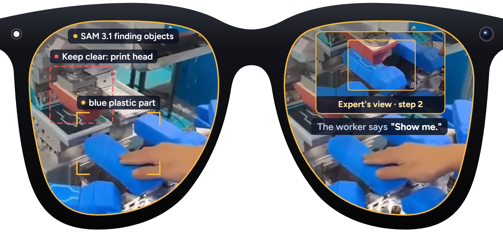
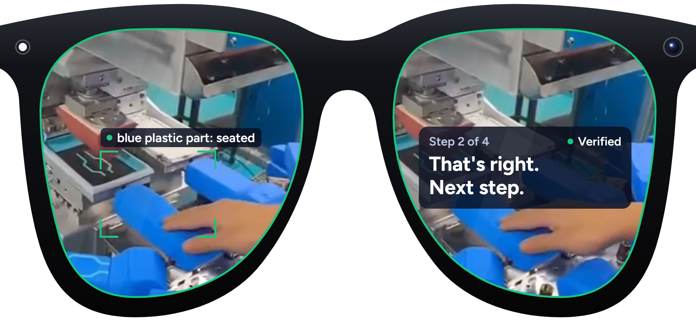
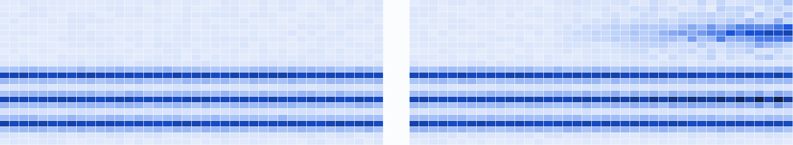
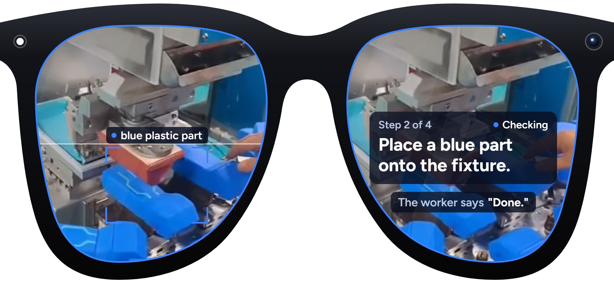
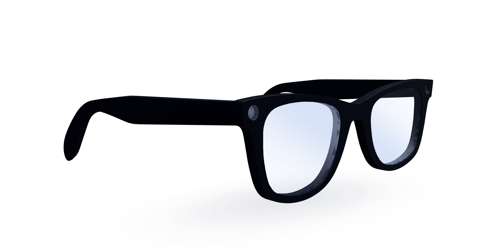
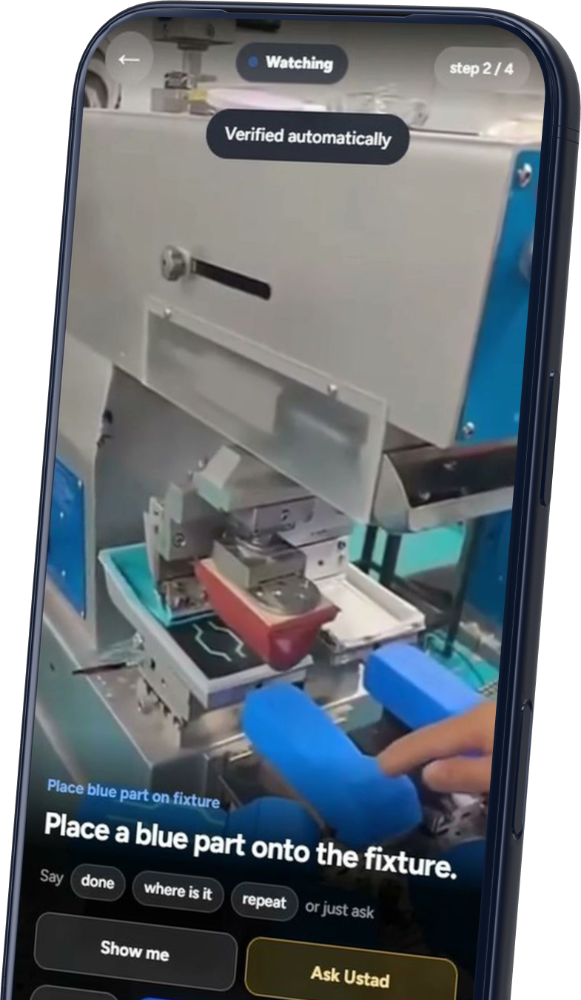

Module 1 · for the owner
AI plant engineer
Knows every machine, explains why one failed, investigates the cause and organises the repair, with your approval.
Building nowUstad learns a factory in one walk, listens to every machine, explains why one failed and guides the repair, step by step, checking each one on camera. It needs no drawings, no sensors and no IT team. Smart glasses are where it's going. A phone clipped to the chest runs it today.
check belt tension first
of unplanned manufacturing downtime is put down to human error, against 9% in other sectors.
Vanson Bourne for ServiceMax, 2017of revenue lost to unplanned downtime by the world's 500 largest companies.
Siemens, The True Cost of Downtime 2024years old: the machines in a typical small unit, with no sensors, no drawings and no maintenance software.
What we see on Ludhiana's factory floorsWalk into a powerloom unit, a flour mill, a paint factory or a machine shop in Ludhiana, Surat or Coimbatore. The machines are 10 to 30 years old. Repairs go in a register, if at all. So breakdowns arrive without warning: a worn bearing or a slipping belt goes unheard until the machine stops.
Then the repair is slow and expensive: whichever mechanic is free is called, the cause is found by trial and error, parts are bought at any price. And the know-how lives in one senior worker's head, and leaves when he does. Every day a machine is down is production the factory never gets back.
Even a large plant with control systems, ERP and maintenance software still digs through scattered drawings, trends and records by hand when a machine trips, then raises the work order and orders parts by hand. A small factory doesn't even have those systems.
The way an experienced plant engineer does.
Ustad is that missing layer, built for factories that have none of the first column.
Knows every machine, explains why one failed, investigates the cause and organises the repair, with your approval.
Building now
Look at a machine through the glasses or a phone and ask what is wrong. It listens for sound drift and warns before the machine stops.
Building now
An expert shows a job once. Ustad guides every new technician through it and checks each step on camera.
Built, tested in 2 factories
The owner walks the floor once, talking: “This is the 2018 mixer, the motor was rewound in March.” Every nameplate is read and every machine mapped.
Module 1 · building now
Learns each machine's healthy sound over its first days and flags drift early, offline, with no fault data.
Module 2 · building nowAsk “why did it stop?” in Hindi, Punjabi next. Get the likely cause, the evidence, how sure it is and what to check first.
Module 2 · building now
Runs the investigation, then talks the mechanic through the fix and checks every step on camera.
Module 3 · 97% and 95%
Camera-checked morning routines: oiling, belt tension, cleaning, safety. They stop the operator mistakes behind many breakdowns.
Module 3 · 88% faster
The sound before failure, the cause and the fix are saved together, so warnings get better in every factory.
1,046 examples from 42 sA digital map of the factory: every machine, its parts, manuals and full history, connected.
Live signals linked to each machine, starting with sound, so changes show early.
The likely cause, the evidence behind it and how sure it is. A likely cause is never shown as a proven one.
Gathers evidence, links past incidents, tests each possible cause and writes the root-cause report.
Guides the repair, drafts the mechanic's ticket and parts order, and waits before any money is spent or production stops.


A phone clipped to the chest runs the same app: the same camera, microphone and speaker.
NextSmart glasses: it sees what the worker sees and answers in his ear, hands free.
The screens we are building. The machines, causes and quotes are examples.
6 machines, 1 needs you
1 · Every machine at a glance
2 · An investigation you can watch
Approve the repair?
The same card arrives on WhatsApp
3 · Nothing is spent until you approve
Every stop and every payment waits for the owner. During the hackathon, mechanic, supplier and payment links are simulated and labelled.
Log-mel spectrogram: time runs right, pitch runs up. Illustration.
Anomaly score per window for one machine, with the alert line τ. The last 5 windows have 3 over the line, so an alert opens and the machine turns red on the factory map. Illustration.
Audio at 16 kHz is cut into short windows, each a log-mel spectrogram xt.
A small autoencoder f per machine learns its healthy sound over the first days. No fault labels needed.
st = ‖xt − f(xt)‖²
τ is set from that machine's own healthy windows.
Alert when st > τ in 3 of the last 5 windows, so a door slam is ignored. An embedding-distance baseline is compared too.
Step cards build on screen as you talk. Ustad writes the job card: the order, the exact settings and torque values you mention, the safety warning before each risky step, and what a finished step looks like to a camera. It checks every step against your own footage before saving. A short recording becomes a checked job card in 20 to 38 seconds.
One spoken step at a time, with the part outlined live. The worker says “done” and Ustad looks before it agrees. Right: it moves on and saves a photo. Wrong: it says what is wrong and how to fix it, and holds the job there. Unclear: it asks for a better view.


Each check saves its photo, verdict and reason in a printable evidence pack. Lockout and hazard steps are never credited from a later view, a hand too close to a hazard gets a spoken warning, and a request to skip a lockout goes to a supervisor.
verify_stepflag_errorrequest_better_view<0f>0<|box;x1=402;y1=318; x2=611;y2=497;w=1280; h=960;c=0.94|>
A box and a confidence for “tank drain valve”. Not a sentence.
Grounding: searched the frame for "tank drain valve", found 1 match. 1. centre of frame, covering 3.1% of the frame, conf 0.94
Parsed into a plain-language report the reasoning model can weigh.
verify_step({ "confidence": 0.94, "reason": "Lever closed, no water", "say": "Good. Next step." })
One tool call. The server advances, banks the photo, speaks the next step.
Any smartphone on a chest strap gives a point-of-view camera, a mic and a speaker. Nothing to install on your machines, nothing wired into your PLCs.
The camera sits where the worker is looking and both hands stay on the job. Same backend, same records: the factory changes nothing when it switches.
Our guided-work module, the Ustad technician, was tried at PI Cottex Pvt Ltd, a textile and clothing manufacturer, and MCPL (Modern Colours Private Limited), a paint maker. We are starting with India. These figures come from guided jobs, not breakdown prediction, which we have not measured yet.
Correct steps confirmed by the camera check
Deliberately planted errors caught during the job
New operators, against the current method
Senior technicians, to a usable job card


| Short recording to a checked job card | 20 to 38 s |
| From saying “done” to the check starting | 0.3 s |
| From “done” to a decision | 4 to 5 s |
| Finished step to the next instruction | about 7 s |
| Model cost to record one job | about $0.09 |
| Model cost to guide a 4-step job | about $0.12 |
| Labelled examples from one 42 s clip | 1,046 |
| Tested on glasses | not yet |
| Camera checks on site, without the cloud | planned |
| Second-model comparison | 8 cases |
| Hindi in real factory noise | in progress |
| Sound alerts on MIMII and DCASE | in progress |
| Hackathon payments and suppliers | simulated |
A dashboard shows that something changed. Ustad tells you why, and what to do next.
Every answer names the record it came from, and a likely cause is never shown as a proven one.
Factory walk, machine records, digital map, sound baseline
Investigation agent with cited answers, WhatsApp approvals, Punjabi
Join with the guided-repair module; MIMII and DCASE benchmark
Pilot on real machines in a Ludhiana factory, with measured results
A machine's sound is changed. A worker asks what's wrong, gets the cause and evidence, watches the investigation, is guided through the fix, and the owner gets a WhatsApp approval card.
A monthly subscription per factory, priced per machine monitored.
A small commission on parts and repairs ordered through Ustad.
Glasses on rent in the subscription; a phone works free.
Starts in one afternoon: no installation, no IT team. Ludhiana first, then cluster by cluster: textiles, paint and chemicals, food processing, engineering workshops.
Owners: fewer surprise breakdowns, faster repairs, lower parts costs, a record of every machine.
Workers: guidance and training in their own language.
Mechanics: scheduled work with a clear diagnosis, not emergency calls.
New jobs: trained Ustad technicians who set it up in each cluster.
The Ustad technician module: an expert records a job once and Ustad guides new workers through it, checking each step on camera. It runs in the browser on a phone clipped to the chest. The plant-engineer and breakdown-check modules are what we are building now.
Not yet tested on glasses. The phone gives the same camera, microphone and speaker on the same backend, so glasses slot in as a thin media layer.
No. The factory map comes from one walk with the glasses or phone, machine records come from nameplates, manuals, bills and voice notes, and machine health comes from sound.
No. It learns each machine's normal sound and flags changes from that. Every verified repair then adds labelled fault data, so warnings improve over time.
Never. It drafts the mechanic's ticket and the parts order, and the owner approves every production stop and every payment.
Sound monitoring runs on the device, offline. Guided work keeps recording through network drops and syncs later. Camera checks on a GPU inside the factory are planned and not tested yet.
Hindi and English today, Punjabi next. Hindi still needs more testing with real accents in factory noise.
About $0.09 in model cost to record a job and about $0.12 to guide a 4-step job. The plan is a monthly subscription per factory, priced per machine monitored.
Today it guides and checks work on the floor. Next it listens to every machine and explains every breakdown.
The live demo is the Ustad technician module and needs an access code, provided on request.